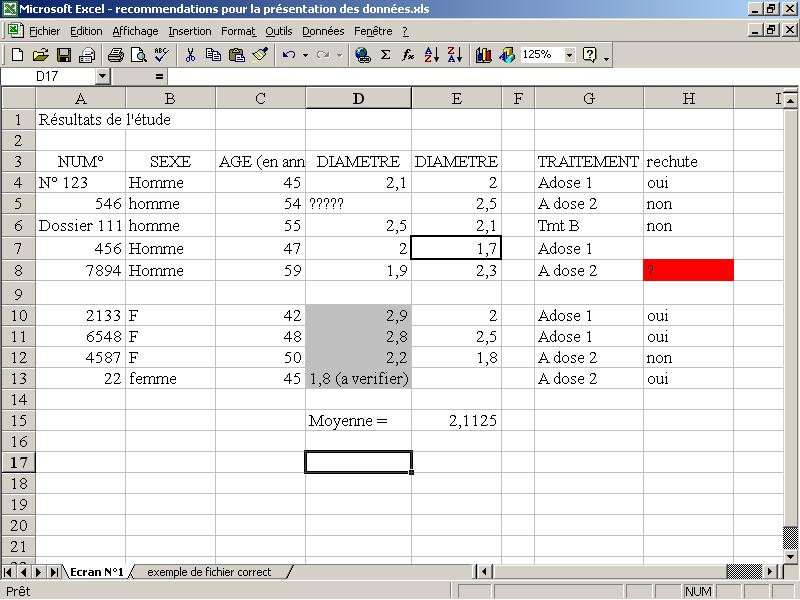

Annexe : Saisie des données
Mode de lecture
Ce document est formé de deux parties : tout d’abord les instructions puis deux copies d’écrans, situées en fin de document. Ces deux parties décrivent conjointement les erreurs à ne pas commettre lors de la réalisation d’un fichier de données ainsi que le format final attendu pour votre fichier. Les erreurs décrites dans le texte sont montrées dans la première copie d’écran. La seconde copie d’écran montre le format attendu pour le fichier de données. Vous pourrez vous reporter à ces deux images pour chacun des exemples donnés dans le texte afin de comparer les erreurs avec ce qu’il faut obtenir in fine.
Logiciel et support de la saisie
Les données doivent être saisies, si possible sur Excel ou Access ou tout autre tableur/base de données capable d’exporter un fichier au format «.txt». Vous pouvez éventuellement faire la saisie directement dans la feuille de données de certains logiciels de statistique tels que SPSS ou Minitab, mais ce n’est pas conseillé.
Le format général
Le fichier final doit être «plein, rectangulaire, nu». Ces trois critères sont détaillés dans les paragraphes ci-dessous.
Fichier plein et rectangulaire
\(1\) Toutes les cases du fichier doivent contenir des données (fichier plein). Lorsque vous ne disposez pas de valeurs pour l’une des cases, mettez un symbole, de préférence une «*», pour indiquer que la valeur est manquante. Le fichier est alors plein : toute les cellules sont remplies. Ceci est particulièrement important pour la dernière ligne et la dernière colonne qui ne doivent absolument pas présenter de cases vides, au risque de perturber l’importation des données dans les logiciels de statistique. Les données manquantes seront donc signalées par une «*». Exemple : dans l’écran , les cases D5, H7 et H8, E13 sont vides suite à des données manquantes. Il faut y mettre une «*».
Il faut porter une attention particulière aux dernières lignes et colonnes car elles contiennent souvent les cas et les variables les moins importants ou pour lesquels on dispose de moins d’informations. On y trouve donc souvent des cases vides.
\(2\) Aucune donnée ne doit apparaître en dehors de la zone de saisie à proprement parler. Le fichier a alors une forme rectangulaire.
Ne laissez pas de formules (moyenne, somme, etc) en bout de lignes et/ou de colonnes : le logiciel de statistique fera tous les calculs nécessaires. Exemple : l’écran contient une formule dans la cellule E15. Dans le fichier à traiter, cette formule doit disparaître afin que le fichier reste rectangulaire.
La ligne des noms de variables doit être la première ligne de la base de données, car l’importation commence généralement à la première ligne du fichier. De plus, lors de cette phase d’importation des données, le logiciel utilise généralement cette première ligne pour y lire les noms des variables. Chaque colonne doit posséder un nom de variable. Le nom de cette colonne doit être placé dans la première cellule de la colonne, tout en haut de celle-ci. Par conséquent, si vous avez huit variables, la première ligne de votre fichier doit impérativement contenir 8 noms de variables. Si votre fichier contient huit variables mais qu’il n’y a qu’un seul nom sur la première ligne, le logiciel ne saura pas de quelle manière faire correspondre les valeurs des variables et leurs noms respectifs. Le plus souvent, les huit colonnes de données se retrouveront réunies en une seule colonne ayant le nom trouvé dans la première ligne. Cette colonne sera alors totalement illisible pour les calculs. C’est pour cette même raison que les noms de variables ne doivent absolument pas contenir d’espace, parfois interprétée par le logiciel comme un séparateur de colonne et donc de variable. Le nombre de noms de variables ne correspond alors plus au nombre de variables ce qui provoque un conflit lors de l’importation des données.
Les noms des variables doivent se situer sur la première ligne du fichier. Certains logiciels permettent de préciser lors de l’importation sur quelle ligne du fichier se trouve la première ligne des données, mais ce n’est pas toujours le cas. Exemple : dans l’écran , la première ligne contient un titre et pas les noms des variables. Ces noms se trouvent dans la troisième ligne. Dans le fichier à traiter, il faudra supprimer le titre et mettre le contenu de la troisième ligne dans la première.
Le fichier ne doit pas contenir de colonnes vides ni de lignes vides. Les données doivent donc commencer sur la deuxième ligne du fichier, immédiatement sous le nom des variables qui seront eux dans la première ligne. Ne mettez pas de lignes vides entre les noms de variables et les données. Exemple : dans l’écran , la ligne 9 doit disparaître, de même que la colonne F. La ligne 2 est vide et devra disparaître de manière à ce que les données fassent immédiatement suite à la ligne des noms de variables.
Ne séparez jamais des sous-groupes de sujets par une ligne/colonne vide. Ne mettez jamais les sujets de deux groupes différents dans deux sous-tableaux distincts (présentation par bloc). Cette présentation induit des espaces vides dans la base de données et l’importation dans certains logiciels s’arrête à la fin du premier bloc. Il faut alors refaire l’importation après modification du fichier Excel d’origine. Exemple : la scissure (en ligne 9) de l’écran n’a pas lieu d’être. Il faut la supprimer. Toutes les données doivent être sur la même feuille. Exemple : Ne mettez pas les femmes sur une feuille et les hommes sur une autre, ce qui constitue un cas extrême d’une présentation par bloc des données.
Fichier nu
La base de données ne doit contenir que des données, sans aucune fioritures. Ne mettez pas de graphique sur la feuille. Mettez les toujours dans une feuille à part. Ne mettez pas de commentaires sur la feuille. Ne mettez pas de couleurs pour signaler certains cas particuliers, ni de gras (aaa), ni de souligné (aaa ou ), ni de barré (aaa ou ). N’encadrez pas de cases pour signaler certains cas particuliers et ne faites aucune mise en page. Exemple : Dans l’écran , les cellules H8 et D10 à D13 sont colorées. Il faut supprimer ces colorations. Le cadre de la cellule E7 doit aussi être supprimé. Les commentaires de la cellule A1 et D15 (moyenne=) doivent être effacés. Le terme Dossier dans la case A6 est inutile, de même que le `` dans la case A4.
Organisation des données
Les sujets
Les sujets doivent être situés en ligne. Il y a un sujet par ligne et une ligne par sujet. Ne juxtaposez pas les sujets. Autrement dit, toutes les données se rapportant à un seul sujet doivent se situer sur une et une seule ligne dans la mesure du possible. Il doit donc y avoir autant de lignes que de sujets et vice-versa.
Les variables et leurs noms
A chaque colonne ne doit correspondre qu’une et une seule variable. N’empilez pas plusieurs variables dans une seule colonne. Inversement, toutes les données se rapportant à une variable doivent se trouver dans la même colonne. Donnez à chacune de vos variables un nom de 8 lettres (et chiffres), 10 au maximum, sans symbole (c’est à dire sans symbole exotique). Ceci est lié au fait que certains logiciels de statistique refusent de lire certains symboles peu usités. Cependant, sont parfois acceptés les 3 symboles suivants : #, _ et plus rarement $. Evitez néanmoins d’en faire usage si possible. Le symbole _ (underscore en anglais, tiret bas en français) est celui qui se trouve sur la touche «8», en haut du clavier, au-dessus des lettres «u» et «i». Ne faites usage de ces symboles qu’en cas d’absolue nécessité. Attention ! Les noms des variables ne doivent jamais commencer par un ## (donc bannir #Tmt1), un nombre (bannir 1Tmt) ou une espace1. Pour s’assurer de l’absence d’espace avant un mot dans Excel, il faut placer le curseur dans la case contenant le mot et s’assurer que le curseur ne peut se déplacer entre le bord gauche de la case et le début du mot. Exemple : dans l’écran , le nom «TRAITEMENT» est trop long et sera la plupart du temps tronqué à huit caractères (TRAITEME). La case C3 contient une parenthèse qui sera souvent mal lue par le logiciel.
En résumé : Le nom d’une variable doit avoir au maximum 10 caractères, ne doit contenir aucune espace et ne contenir aucun caractère particulier autre que des lettres et des nombres. Par ailleurs, le nom d’une variable ne doit jamais commencer par un nombre ou une espace.
Chaque nom de variable doit être unique, deux variables différentes ne doivent pas avoir le même nom. Contrairement à Excel qui accepte que deux colonnes soient nommées de la même façon, les logiciels de statistique requièrent une identification parfaite et univoque des variables afin d’éviter toute confusion entre variables, notamment lors de leur importation dans le logiciel mais aussi lors du traitement des données. Exemple : Il y a deux fois (en D3 et E3) le même nom de variable. Il faudra distinguer ces deux variables en leur donnant deux noms distincts.
On peut par contre numéroter les variables qui se rapportent à la même chose. Si pour un même sujet, vous faites des mesures répétées, c’est-à-dire des mesures à différentes périodes ou sur différents organes ou en différents endroits d’un même organe, utilisez une colonne par période ou organe ou endroit) avec, dans le nom de la variable, un numéro ou une lettre correspondant à la période ou à la localisation de la mesure. En mettant le numéro de la période concernée à la fin du nom de la variable, la mesure et son numéro sont clairement identifiés. Exemple : Temps_1, Temps_2, Temps_3, ou plutôt Tps1, Tps2, Tps3, ou encore PBHA, PBHB, etc.
Ne mettez pas de commentaires dans vos noms de variables, ni d’indications superflues dans les données. Exemple : dans l’écran , la case C3 contient un commentaire après le nom de la variable. Ce commentaire est à enlever. De même, le commentaire de la cellule D13 doit être supprimé (après vérification de la valeur en question...). Vous pouvez par contre utiliser la fonction insérer un commentaire d’Excel pour apporter des précisions, tel qu’un libellé extensif pour un nom de variable un peu complexe.
Il est très souhaitable que vous rajoutiez dans votre tableur une feuille donnant la correspondance entre le nom de la variable réduit à moins de 11 caractère et son libellé étendu afin de faciliter la lecture des données au cours de l’analyse. Vous indiquerez par exemple que la variable THS1 correspond à Mesure de la THS par la méthode N°1.
Codage des modalités
Il existe deux grands types de données : les données qualitatives et les données quantitatives. Les données quantitatives correspondent à des mesures ou a des quantités, telles que le poids, la taille, une dimension, le résultat d’un dosage, un nombre de cigarettes, de journées, etc. Les données qualitatives correspondent à des données qui évaluent un caractère (grand, petit) ou une qualité (couleur, classe thérapeutique, présence/absence, oui/non etc….). Elles contiennent un nombre variable de modalités. Par exemple, le sexe est une variable qualitative à deux modalités alors que l’aspect du LCR à la PL, lui, peut prendre plusieurs modalités (clair, hématique, trouble, etc). Ces modalités seront donc codées par du texte, généralement l’intitulé en clair de la modalité : homme, femme, clair, hématique, etc... Certains logiciels de statistique ou certaines fonctions de certains logiciels n’acceptent de lire que des chiffres et il faut alors recoder toutes les modalités de la variable qualitative par des valeurs numériques arbitraires. Exemple : oui \(\rightarrow\) 1, non\(\rightarrow\) 0 ; homme \(\rightarrow\)1, femme \(\rightarrow\) 2 etc. Bien sûr, tout autre codage serait acceptable puisque le chiffre n’indique pas ici une quantité mais le codage type \(0/1\) est le plus pratique. Il est donc fortement conseillé de l’utiliser en priorité. Dans l’idéal, faite directement deux variables redondantes : l’une avec un codage en texte et l’autre avec un codage numérique. Vous pouvez distinguer ces deux variantes en rajoutant par exemple T et N à la fin du nom de la variable.
Les logiciels acceptent parfois de prendre des modalités sous forme de texte. Dans ce cas, il est alors impératif que toutes les occurrences d’une même modalité soient écrites exactement de la même façon. Exemple : Dans la colonne B de l’écran , la modalité femme est codée de deux façons différentes. Il faut alors les remplacer par un seul codage, F par exemple. De même, les traitements de la colonne G ne sont pas uniformisés. Il est plus simple de ne mettre que A et B. La notion de dose sera mise dans une colonne à part nommée Dose. S’il faut indiquer deux traitements dont l’un est attribué à deux doses différentes, une bonne solution consiste à créer une variable traitement à trois modalités: A1, A2 et B. Faites également attention aux majuscules et aux minuscules dans les noms : dans certains cas Homme et homme seront considérées comme étant des occurrences différentes, les logiciels de statistique étant parfois sensibles à la casse. Il faudra donc toujours écrire les mêmes modalités de la même manière. De même, vérifiez qu’il n’y ait pas de signes inutiles comme des points, des virgules, des apostrophes, etc, signes que l’on retrouve souvent à la fin d’une modalité. Faites un double codage, textuel et numérique, pour toutes les variables qualitatives ce qui peut s’avérer utile pour certaines procédures statistiques, la gestion interne des données variant d’un logiciel à l’autre.
Puisque les variables qualitatives permettent de définir l’appartenance à un groupe, cette appartenance doit être identifiée par une variable de groupe, les sujets étant codés par un chiffre, 1, 2, etc pour le groupe 1, le groupe 2, etc. Exemple : dans l’écran , dans la variable Sexe, les items Hommes, Femmes et F, seront remplacés par des 1 et des 2 ou des 0 et des 1. S’il y a plusieurs variables de groupes c.à.d. si vous classez vos sujets suivant plusieurs critères, faites autant de variables de groupe que de critères : une variable pour le sexe (hommes, femmes), une variable pour la sévèrité (sévère, modéré, bénin), une variable pour les catégories d’âge (jeune, âgé). Ne combinez pas les groupes en une seule variable ayant des modalités composites (homme jeune sévère, homme âgé bénin...). Exemple : vous analysez des patients que vous avez groupé par sexe et type de traitements (2 et 3 modalités respectivement) : faites deux variables, l’une qui contient les codes 1 et 2 pour le sexe et l’autre qui contient les codes 1, 2 et 3 pour les traitements. Ne faites pas une variable sexetmt qui contiendrait 6 modalités, comme dans l’écran , cellules G10 à G13. Les modalités de traitement (A dose 1, A dose 2, prod.B) doivent être remplacées par deux variables codées chacune par des chiffres.
En ce qui concerne les variables quantitatives, mettez le même nombre de décimales à tous les sujets. Le nombre de décimales attribuées à la mesure doit être pertinent par rapport à la précision souhaitée et par rapport aux habitudes dans le domaine. Enfin, pensez à ne pas les mélanger avec du texte.
Cas particulier des données de survie
L’analyse des durées de survies supposent l’existence de plusieurs données : la durée de survie observée et la présence ou l’absence de l’évènement d’intérêt. La survie est ici entendue au sens large, c.-à-d. délai jusqu’à la survenue d’un évènement d’intérêt, qu’il s’agisse d’un décès ou non (une récidive, etc). Il faut donc prévoir une colonne pour indiquer si l’évènement est survenu (on choisira par exemple un codage en 1 = décès et 0 si vivant) et une colonne pour la durée de survie. Dans l’idéal, il faut également une colonne indiquant la date de début de suivi du sujet (en général la date de diagnostic ou la date d’opération) et une colonne indiquant la date des dernières nouvelles (DDN). Cette DDN contient soit la date de l’évènement s’il a eu lieu soit la date à laquelle on a chercher à recueillir l’évènement. Il ne vous reste plus qu’à calculer le délai entre la date de début de suivi et la date de dernières nouvelles pour obtenir la durée de survie. Cette durée sera exprimée dans l’unité la plus adaptée au contexte : jours, mois ou années.
Points divers
Mettez toujours l’information la plus primitive. Ne mettez pas de données synthétiques : si l’on recueille l’âge, mettez l’âge (ou mieux : la date de naissance) et ne notez surtout pas d’emblée la classe d’âge à laquelle appartient la personne. En effet, à partir de la date de naissance, on peut trouver l’âge à n’importe quelle date ainsi que la classe d’âge, alors qu’à partir de la classe d’âge on ne peut pas retrouver l’âge exact et encore moins la date de naissance. Il en est de même pour des tailles de tumeurs dans un classement TNM ou pour un score clinique basé sur des classes/catégories. Notez la taille de la tumeur à partir de laquelle on peut définir le T. Pour un score clinique, mettez l’ensemble des composantes du score, lequel sera alors reconstruit, au mieux par vos soins, sur Excel le plus souvent. Vous pouvez omettre les composantes du score si vous êtes certain de ne pas vouloir les analyser en tant que telles.
En ce qui concerne les dates, entrez-les en utilisant dans Excel le format suivant : jj/mm/aaaa.
Anonymat
Evitez de laisser les noms des patients. Il est préférable que chaque sujet soit identifié par un numéro si possible. Ce numéro d’identification doit bien sûr se trouver également sur le fichier que vous conserverez chez vous afin de pouvoir retrouver rapidement les sujets, si des modifications s’avéraient nécessaires.
Autres situations
Des cas particuliers peuvent subsister. Adressez vous alors directement à la personne qui réalisera le traitement des données.
Contrôle des données
Le propriétaire de la base de données est responsable de son contenu. Le statisticien ne peut pas toujours suspecter qu’une donnée est erronée à la vue des résultats. La vérification du contenu de la base de données doit donc impérativement être réalisée avant que les analyses ne soient commencées, et ceci surtout si le statisticien est seul pour analyser vos données. Cette vérification est d’autant plus simple et rapide qu’elle est réalisée par l’investigateur ayant généré les données et qui est le plus à même de débusquer des erreurs dans la saisie. Le tableur Excel permet de réaliser rapidement ces vérifications. Pour cela, placer le curseur dans la première ligne du fichier formaté, contenant le nom des variables. Après avoir supprimé dans le fichier de données d’éventuelles lignes vides qui auraient échappé à votre vigilance, cliquez sur Données/Filtre/Filtre automatique. Une petite boîte ornée d’une flèche apparait alors dans chaque case contenant du texte. En cliquant sur cette flèche, apparait une liste contenant toutes les modalités présentes dans la colonne. En la parcourant, on peut vérifier l’absence de valeurs fausses ou mal saisies, de valeurs impossibles (comme des âges négatifs) ou en dehors des limites de l’étude (contrôle des critères d’inclusion/exclusion) ainsi que l’absence de modalités qui devrait être présentes. La réalisation de ces vérifications avant le début des analyses permet de gagner un temps précieux.


En typographie, le mot espace est féminin.↩︎